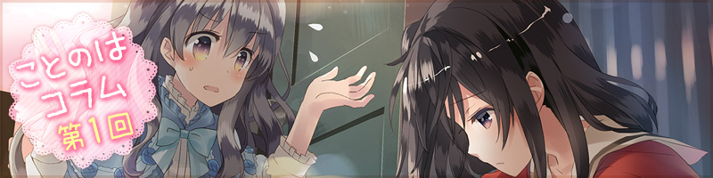

『ことのはコラム』公開中!
4/2に電撃姫.com様の閉鎖にともない『ことのはコラム』第1回～第3回のページを公開しました。
第3回「ディレクターさんとお話してきたよ♥」回答：皆川浩治
みなさん、こんにちは！
まいど！！ 新ブランド・SukeraSparo（スケラスパーロ）です。
毎日暑い日が続きますね。
夏バテ防止にうなぎを食べるのは有名な話ですが、
土用餅としてあんころ餅を食べる風習もあるのだそうです。
小豆は厄除けに通じるということで、暑さに負けず無病息災で過ごせるといわれているんだって。
「SukeraSparo」のブランドの意味は「鯛焼き屋」！？
あんこたっぷりのたい焼きを食べて、体を元気にして参りまっしょい！！
全3回の連載コラムの最終回は、このゲームの全ての源である
企画・ディレクター皆川浩治さんのお話を伺って参りました。
早速、その様子をご紹介していきたいと思います。よろしくお願いします！！
第2回「原画家さんとお話してきたよ♥」回答：成瀬ちさと
みなさん、こんにちは！
まいど、新ブランド・SukeraSparo（スケラスパーロ）です！！
2017年8月25日（金）に発売になります
私たちのデビュー作「ことのはアムリラート」
みなさん、チェックしてくれましたか？
まずみなさんが1番はじめに触れることになるのは、
この方の描き出した世界、人物などのイラストですよね。
「この雰囲気好きだなー?」というお声も頂いております、ありがとうございます！！
全3回の連載コラム、第2回の今回は「ことのは」の世界を生み出した
原画・キャラクターデザインの成瀬ちさとさんのインタビューをご紹介したいと思います。
成瀬さん、よろしくお願いします！！

第1回「シナリオライターさんとお話してきたよ♥」回答：J-MENT
初めまして！ 突然ですが3週連続で、コラム内インタビューを掲載することになりました。
新ブランド・
SukeraSparo（スケラスパーロ）です。
「SukeraSparo」……このブランドの意味は「鯛焼き屋」!?
どうして「鯛焼き屋」なのか気になる方はぜひ
公式サイトを見てください。
さて、2017年8月25日（金）にはいよいよデビュー作の
『ことのはアムリラート』が発売！
電撃姫.comさんでも紹介していただいてます。
■桃色の空の下で描かれる、女の子同士の物語『ことのはアムリラート』